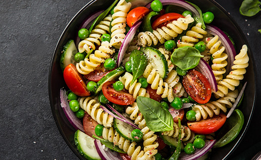

Pasta salad

Description
Such a refreshing and nourishing dish that you can fill in with a wide variety of side dishes.
It is also really healthy because it has a lot of greens and carbohydrates.
Ingredients
- Spiral pasta (150g per person).
- Cherry tomatoes.
- Tuna or green and yellow pepper.
- Salt and extra virgin olive oil.
Steps
- Boil some water and then cook the pasta.
- Slice up the cherry tomatoes and mix them with the tuna.
- Add some salt, oregano and extra virgin olive oil.